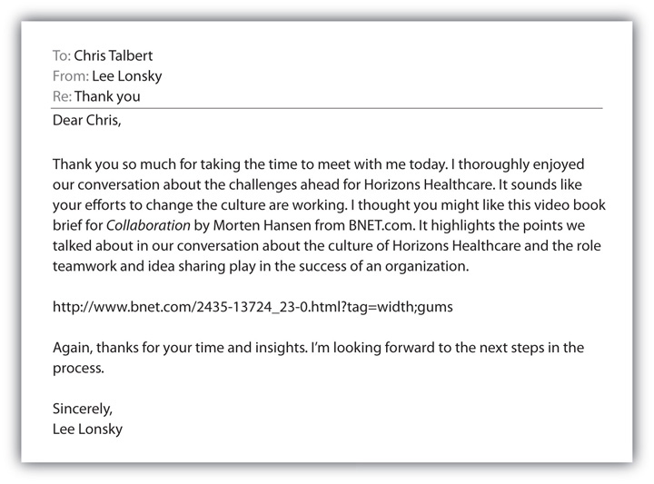
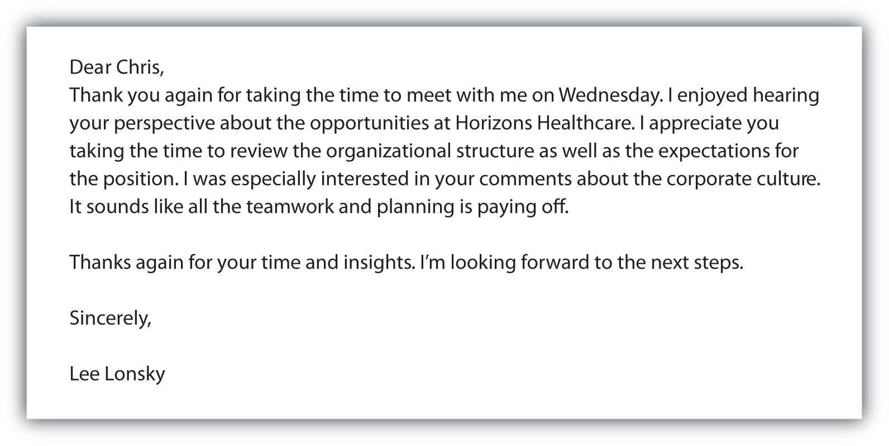

It’s exciting to get a call to go on a job interview. During your preparation (described in detail in the Selling U section of Chapter 10 "The Presentation: The Power of Solving Problems"), you will, of course, research the company and learn everything you can about how it does business. You’ll identify some questions that you want to ask because you realize that a job interview is a two-sided exchange—the company wants to learn about you, and you want to learn about the company. You’ll plan your wardrobe, transportation, and other details well in advance of the big day. But one thing you may not think about is how to overcome objections during the job interview.
Be prepared to answer the most common objections that may be voiced during your interview. Focus on the positive and keep your answers professional. In fact, you should practice your answers to these questions out loud so that your answers are crisp and conversational. When an interviewer presents an objection, take a breath before you answer the question. Restate the objection and then answer it. It’s best not to dwell on an objection and talk too much, simply handle them and move on.Randall S. Hansen and Katharine Hansen, “Closing the Sale and Overcoming Objections in the Job Interview,” Quintessential Careers, http://www.quintcareers.com/printable/interview_objections_closing.html (accessed October 24, 2009). Here are some common objections and suggested ways to handle them.
The best way to anticipate and even avoid this objection is to review your portfolio during the interview (see the Selling U section of Chapter 6 "Why and How People Buy: The Power of Understanding the Customer" for more details about preparing your portfolio).Randall S. Hansen and Katharine Hansen, “Closing the Sale and Overcoming Objections in the Job Interview,” Quintessential Careers, http://www.quintcareers.com/printable/interview_objections_closing.html (accessed October 24, 2009). A portfolio is a visual way to demonstrate your skills and experience. It’s one thing to talk about what you’ve done, it’s quite another to bring it alive to your interviewer. It’s especially important to show your work from internships, major class projects, volunteer projects, and other examples of your work.
This is another opportunity to refer to your portfolio by talking about projects that you work on with other people. Chances are you’ve worked on teams for class projects, internships, volunteer projects, and other areas. Be prepared with specific examples about how you have worked in collaboration with a team or taken on the leadership role within a team.Randall S. Hansen and Katharine Hansen, “Closing the Sale and Overcoming Objections in the Job Interview,” Quintessential Careers, http://www.quintcareers.com/printable/interview_objections_closing.html (accessed October 24, 2009).
Your response to this objection should be something like “Salary is only one part of compensation. I’m looking for the right opportunity, and I’m willing to look at other areas of the total compensation program, including benefits, advancement, exposure, and other elements of my personal and professional growth.” It’s best not to take this conversation into a salary discussion. Wait to have the salary conversation until the company has extended an offer. It’s a good idea to have a salary range in mind before you go into an interview. Do your research on Web sites such as Salary.com so that you are prepared if your interviewer asks how much you are expecting as a starting salary.Mary Moss, “Tips for Overcoming Objections during a Job Interview,” Associated Content, August 13, 2007, http://www.associatedcontent.com/article/337859/tips_for_overcoming_objections_during.html?singlepage=true&cat=31 (accessed October 24, 2009).
When you are starting out, it will be rare to hear that you have too much experience for a particular position. However, if you do hear it, be ready with the right answer. It’s always best to seek a job you really want. But starting at a level that might be below your expectations is a good strategy, especially in this economy.
When interviewers say this, they are worried that when the job you want comes along, you will leave. Answer this objection by pointing out that you are willing and excited about learning about the business from the ground up. Based on your research of the company, give your interviewer a specific reason about why you want to work for that particular company. People are more willing to give you a chance if you are really interested in working for the company.
Although there are some common objections you may hear in a job interview, chances are you will rarely hear an objection on a job interview. This is one major difference between a sales call and an interview. Most managers and recruiters respond during an interview in a more neutral way so as not to imply that the job is going to one candidate over another.Kim Richmond, Brand You, 3rd ed. (Upper Saddle River, NJ: Pearson Prentice Hall, 2008), 188. Prospective employers prefer to interview all the candidates and then make their hiring decision. Therefore, their objections are often more like hidden objections, those that are not openly stated during the interview. Unlike the sales call, it is not appropriate to keep probing to identify the objection. The best way to overcome objections, hidden or stated, is to be prepared to sell yourself in the most compelling way possible.
The concept of value, described earlier in this chapter, can be a successful way to overcome objections in a job interview whether the objections are stated or hidden. Prepare for the interview, understand the company’s needs, and demonstrate how you can meet the needs. Simple. Effective. Powerful.
After you’ve shaken hands and finished your interview, keep in mind that your ability to stand out is not over. Follow-up is the currency of sales; those who follow up significantly increase their chances of getting the sale (or getting the job). Here are some ways to follow up and make yourself memorable.
Prospective employers want people who want to work for the company. A thank-you note can set you apart from other candidates and show your interviewer that you really want the job (it’s easy for every candidate to say she wants the job, but not every candidate writes a thank-you note).
You have the opportunity to say thank you more than once. It’s also a good idea to take advantage of every opportunity to demonstrate your interest and enthusiasm for the company. Start with a thank-you e-mail that you send the day of the interview. It’s important to use e-mail to thank your interviewer for his time, and it is also is the perfect way to deliver value. Take a minute and recap some of the topics you discussed with each interviewer (if there was more than one). Jot down a list and go online and look for an article, video, or interesting blog that would be worth sharing. Send a personal thank-you e-mail to everyone with whom you interviewed (no group e-mails here). Also, be sure to send a thank-you e-mail to the recruiter, if you worked with one to get the interview. It’s important to remember that a thank-you e-mail should be as formal and professional as a handwritten thank-you note.
Now, it’s time to write your thank-you e-mail. There are three major parts to a thank-you e-mail. It can be short, but effective.
See Figure 11.5 "Sample Thank-You E-mail" for a sample thank you e-mail. Additional sample thank-you e-mail notes can also be found at http://jobsearch.about.com/od/thankyouletters/a/thankyouemail.htm.
Figure 11.5 Sample Thank-You E-mail
Sending a thank-you e-mail is good etiquette, and it reminds your interviewer that you can deliver value to the organization. But don’t stop there. As soon as you send your thank-you e-mail, write a handwritten thank-you note to each person with whom you interviewed. You might think that it is unusual to send two thank-you notes, but it is the perfect way to communicate your interest and value to your interviewer in two ways: the thank-you e-mail demonstrates immediacy and helps you deliver value with a link to a relevant article, video, or blog, and the handwritten thank-you note provides a personal touch that few candidates take the time to do. As with the thank-you e-mail, timing is important for the handwritten note. It’s best to write and mail it the same day so your interviewer receives it within a day or two of the interview. It’s the perfect way to reinforce the fact that you go the extra mile to make an impression and build a relationship.
Thank-You Note
(click to see video)This video highlights some key elements of a handwritten thank-you note.
See Figure 11.7 "Sample Handwritten Thank-You Note" for a sample handwritten thank-you note. Additional sample thank-you notes can also be found at http://jobsearch.about.com/od/thankyouletters/a/samplethankyou.htm.
Figure 11.7 Sample Handwritten Thank-You Note
Dos and Don’ts of Thank-You Notes
Here are some tips for writing effective thank-you e-mails and notes:
Here are some things to avoid when sending thank-you e-mails and notes:
At the end of a job interview, it’s a good idea to ask about next steps. Usually interviewers or recruiters will tell you the expected time frame in which they will make a decision. This is valuable information because it will help you determine how and when you should follow up.
If you don’t hear back from the employer or recruiter within the specified time frame, it’s recommended that you call and follow up. Companies frequently have good intentions of making a decision quickly, but other business issues take priority. Following up with a phone call helps remind your prospective employer that you are interested in the position. While it is appropriate to follow up by e-mail, it is more effective to follow up by phone. It’s easier to have a conversation with the interviewer or recruiter and get some insight about the timing as well as reinforcing why you are a good choice for the position. Continue to do research on the company so that when you follow up, you can discuss company news. For example, you might say something like “I noticed that you were recently awarded the ACON business. It sounds like this is an exciting time at the agency and one that will need some motivated salespeople. I wanted to follow up on our conversation last week to see where you stand with filling the position.”
Set up a Google News Alert (http://www.google.com/alerts) using keywords for every company in which you are interested in working. The news alerts will be delivered to your e-mail (or other source you specify), and you will know all the latest news about the company—as it happens. It’s a good idea to send an e-mail to your contact about the news as a follow-up and a way to keep in touch.
You can see that follow-up is critical after an interview. It helps overcome objections even after the interview is over. The same principle of follow-up applies to every contact you make during your job search.
When you use the tools described in the Selling U sections of Chapter 7 "Prospecting and Qualifying: The Power to Identify Your Customers" and Chapter 8 "The Preapproach: The Power of Preparation" to get the word out about your personal brand, follow-up will be especially important. Your list of twenty-five target companies and the appropriate people to contact at each that you created in the Selling U section of Chapter 7 "Prospecting and Qualifying: The Power to Identify Your Customers" should include a phone number and e-mail address for each person on your follow-up list. Within one week of sending a cover letter and résumé, a phone call to each person (or at least the top twenty people) on your mailing list will help reinforce your cover letter and résumé and give you the opportunity to sell yourself on the phone.
You learned about the power of networking in Chapter 3 "The Power of Building Relationships: Putting Adaptive Selling to Work". But like other forms of contact, networking requires follow-ups. Make it a point to follow up by e-mail or phone with each person on your networking list every four to six weeks.
It’s especially important to follow up quickly with those people with whom you connected about a possible job or contact to someone at a company. It’s appropriate to follow up within a week, unless the person told you otherwise.